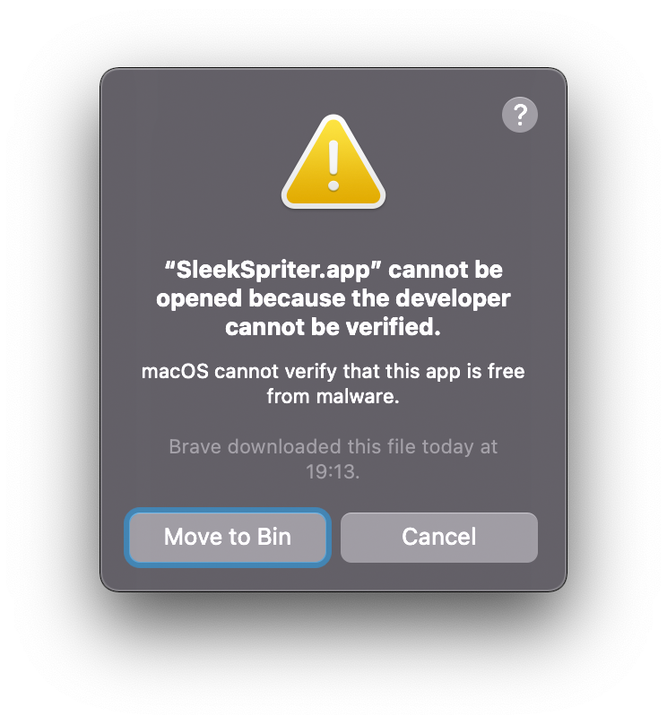
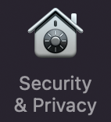
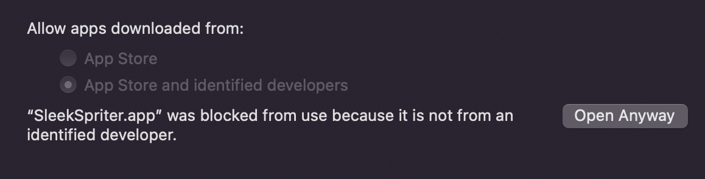
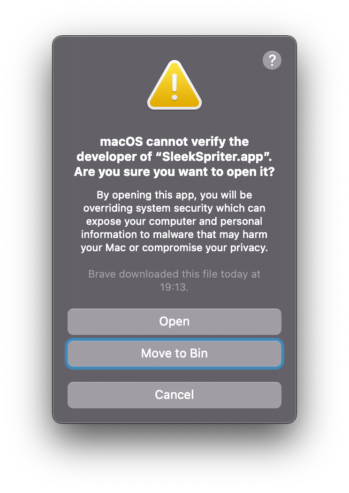
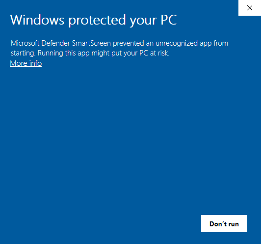
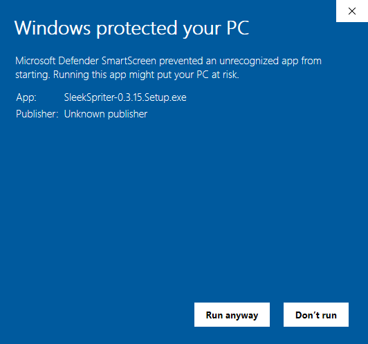

latest release: %VERSION%
all releases
all releases
next up
This application is unsigned, so Mac OS will not allow you to open it when you try to run it the first time:
Click on "Cancel", open the System Preferences and find Security & Privacy.
On the bottom of the window, you'll now have an option to open the app. Click "Open Anyway".
Mac OS will now show you the first dialog again, but this time gives you the option to "Open".
That's it! Hide installation note
This application is unsigned, so Windows will show a warning when you try to run it the first time:
To run the app, click on "more info" and then on the newly appeared "Run anyway" button:
That's it! Hide installation note